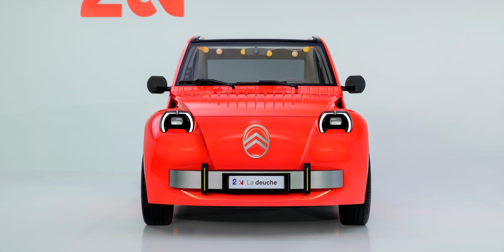

for DC Advanced UX Team.Vivi · Yohan · Libby · Lim Jisu · Katey · Anna
Back Issue

Cockpit
2CV: comic UI on a cylinder, Radioën unclips
Car and Driver's look at Citroën's Paris 2CV concept zeroes in on the cabin. There is no conventional dashboard: a cylinder off the column holds an 8.0-inch touchscreen and a thin display at the windshield base, both running comic-book, hand-drawn graphics for climate, speed and navigation. The sound system hangs underneath like a classic radio, unclips, and doubles as a portable speaker. A wicker basket replaces the centre console; yellow plaid deck-chair seats and lanterns around the fabric sunroof finish the picnic mood. Door straps replace handles. It previews a sub-€15,000 EV for 2028, with a Fourgonnette van sibling.
Car and Driver看巴黎雪铁龙2CV概念车，重点在座舱。没有传统仪表台：转向柱伸出的圆柱装着8.0英寸触屏和风挡底部细条显示，界面都是漫画手绘风，覆盖空调、车速和导航。音响像老式收音机挂在下方，可拆下当便携音箱。可拆柳条篮代替中控，黄格纹躺椅式座椅，织物天窗边缘挂着小灯笼。门上用拉带代替把手。概念车预告2028年低于1.5万欧元的电动车；厢式Fourgonnette共用同一前脸。
카앤드라이버가 파리 시트로엥 2CV 콘셉트 실내를 짚는다. 일반 대시가 없다. 컬럼에서 나온 원기둥에 8.0인치 터치와 윈드실드 아래 얇은 디스플레이가 있고, 공조·속도·내비 모두 만화 손그림 UI다. 사운드는 클래식 라디오처럼 아래에 걸려 떼어 휴대 스피커가 된다. 센터 콘솔 대신 고리버켓, 노란 체크 데크체어 시트, 패브릭 선루프 가장자리의 작은 랜턴. 도어는 손잡이 대신 스트랩. 2028년 1만 5천 유로 미만 EV를 예고하고, 포고네트 밴도 같은 앞모습을 쓴다.
Genesis's GV90 deep dive centres on a variable popup OLED: while driving it is a 23.6-inch panel that merges cluster, navigation and media; parked, it rises 90 mm to 24.6 inches for a cinema view. Closing the door powers the car on. A Motion Column Shifter ticks to 2 o'clock, the Crystal Sphere Controller rotates to show controls, and dashboard tweeter covers part sideways — choreography instead of a start button. Front seats swivel 180 degrees into a lounge. The stack runs Pleos Connect with Gleo AI. LG supplies the display, a 13.2-inch rear OLED, an eight-inch console touch screen and the CCU.
제네시스 GV90 딥다이브의 중심은 가변 팝업 OLED다. 주행 중에는 클러스터·내비·미디어가 합쳐진 23.6인치이고, 주차하면 90mm 올라가 24.6인치 시네마가 된다. 문을 닫으면 시동이 걸린다. 모션 컬럼 시프터가 2시로 가고, 크리스탈 스피어가 돌아가 조작면을 드러내며, 대시 트위터 커버가 옆으로 열린다. 시작 버튼 대신 안무다. 앞좌석은 180도 돌아 라운지가 된다. Pleos Connect와 Gleo AI가 돌고, LG가 디스플레이·13.2인치 후석 OLED·8인치 콘솔 터치·CCU를 넣는다.
Google Play for cars: layout fits the screen shape
Google is rolling out a redesigned Play store for cars with Google built-in. The layout adapts to each cabin's display shape, orientation and size, with parked-versus-driving collections for audio, video and games. New apps include STARZ, Firefox, Ludo King and JioHotstar. Starting with YouTube, you can watch while parked and keep listening with background audio as soon as you shift into drive, with a Premium subscription. The update reaches more than 100 models across 16 brands, including the next Chevrolet Silverado and GMC Sierra centre screens.
구글이 Google 빌트인 차량용 Play 스토어를 다시 짠다. 레이아웃이 차마다 화면 모양·방향·크기에 맞추고, 주차와 주행용으로 오디오·비디오·게임 컬렉션을 나눈다. STARZ, Firefox, Ludo King, JioHotstar가 들어온다. YouTube부터는 주차 중 시청하다 D로 넣으면 바로 백그라운드 오디오로 이어지며 Premium이 필요하다. 16개 브랜드 100대 이상, 다음 쉐보레 실버라도와 GMC 시에라 센터 스크린에도 간다.
InCar's cabin walkthrough of Jaguar's Type 01 puts a single 24-inch OLED across the dash for instruments and infotainment, with a separate 7-inch console pad for climate and audio and 7-inch portrait screens for the rear. A Meridian Immersive Sound System packs 38 speakers, including a full-width panoramic soundbar at the base of the windscreen that also houses ClearSight, the camera rear-view display. Front seats add Sensory Audio haptics. Controls and storage stay hidden until needed. Orders open January 2027; a figure around $130,000 has been rumoured.
InCar가 재규어 Type 01 실내를 살핀다. 대시에 계기와 인포를 합친 24인치 OLED 하나, 공조·오디오용 7인치 콘솔 패드, 뒷좌석 7인치 세로 화면. Meridian 몰입 사운드는 스피커 38개이고, 윈드실드 아래 전폭 사운드바에 ClearSight 카메라 후방 디스플레이가 들어간다. 앞좌석에는 Sensory Audio 햅틱. 조작과 수납은 필요할 때만 드러난다. 2027년 1월 주문, 약 13만 달러가 거론된다.
Seagull Gen2: no cluster, buttons stay under the pad
BYD's second-generation Seagull, due 20 October, stretches to 4,205 mm with a 2,650 mm wheelbase and puts LiDAR on the roof. Inside, the traditional instrument cluster is gone; a larger central touchscreen takes the dash, while selected physical buttons remain for quick use. A wireless charging pad and a roomy console bin sit under a minimalist two-spoke wheel. Power is a 95 kW motor on a second-generation LFP Blade battery with flash charging. The cabin reads as a small-EV bet: more glass for software, fewer gauges, and hard keys where the thumbs still expect them.
BYD 2세대 씨걸이 10월 20일 출시 예정이다. 길이 4205mm, 축거 2650mm, 지붕에 라이다. 전통 클러스터는 없고 더 큰 센터 터치가 대시를 맡으며, 빠른 조작용 물리 버튼은 남긴다. 무선 충전 패드와 넓은 콘솔 수납이 미니멀 2스포크 휠 아래 있다. 95kW 모터에 2세대 LFP 블레이드와 플래시 충전. 소형 EV의 내기: 소프트웨어용 유리는 늘리고 계기는 줄이되, 엄지가 찾는 하드 키는 남긴다.
Xyber Air: TFT with nav, calls and auto brightness
Segway's Xyber Air, on sale from 27 October at $1,999.99, keeps the original Xyber's angular frame and X-shaped lights in an 84 lb street package. A full-colour TFT shows navigation, ride metrics, battery, calls and music, and dims or brightens with ambient light. Riders pick Class 1, 2 or 3 in the app (Hybrid where legal), with a 750 W motor, 80 Nm peak torque and a 48 V 717 Wh pack rated up to 58 miles. AirLock, Apple Find My, GPS Lost Mode and OTA updates cover the display, battery and controllers. Traction control, hill descent and hill-start assist sit under UL 2271 and 2849.
세그웨이 Xyber Air는 10월 27일부터 1,999.99달러. 오리지널의 각진 프레임과 X형 램프를 84파운드 스트리트 패키지로 남긴다. 풀컬러 TFT에 내비·주행·배터리·통화·음악이 뜨고 주변광에 맞춰 밝기가 바뀐다. 앱에서 Class 1·2·3(합법 시 Hybrid), 750W 모터, 피크 80Nm, 48V 717Wh로 최대 58마일. AirLock, Apple Find My, GPS Lost Mode, OTA가 디스플레이·배터리·컨트롤러를 덮는다. TCS·힐 디센트·힐스타트에 UL 2271·2849.
Zero Motorcycles took the Guinness title for longest journey by electric motorcycle on a single charge: 436.5 km from the French Alps to the Mediterranean on a production Zero DS with the optional 3.6 kWh Power Tank, for 19.2 kWh total. The charge port was sealed; dual GPS trackers and a Guinness adjudicator signed off. Two sibling bikes also beat the old 310.7 km mark — an SR/S to 350 km and a DSR/X to 384 km — on public roads overnight at about 52 km/h. Custom ride modes and regeneration were part of the plan, not special hardware.
제로가 전기 오토바이 단충전 최장 거리 기네스 타이틀을 가져갔다. 양산 Zero DS에 옵션 3.6kWh Power Tank로 총 19.2kWh, 프랑스 알프스에서 지중해까지 436.5km. 충전구를 봉인하고 GPS 두 대와 기네스 심판이 확인했다. SR/S 350km, DSR/X 384km도 옛 기록 310.7km를 넘겼다. 야간 공도, 약 52km/h. 커스텀 라이드 모드와 회생은 전략이지 특제 하드웨어가 아니다.
Schneider Electric's Smart Thermostat for Apple Home Collection uses a translucent display that brightens as you approach and dims in the dark. Adaptive Temperature in the Home app reads iPhone presence to preheat or precool without schedules; Clean Energy Guidance shows when the local grid is cleaner. Tap-to-pair NFC works even unpowered, with Matter over Thread and end-to-end encryption in Apple Home. Optional Room Sensors add temperature and humidity per room. Apple lists $199.95 for the thermostat and $39.95 for a sensor; Schneider says U.S. and Canada Apple Store availability begins early 2027.
施耐德为Apple Home Collection做的智能温控器用半透明屏，走近变亮、暗处变暗。Home应用的自适应温度根据iPhone是否在家预热或预冷，无需排程；清洁能源指引显示本地电网更干净的时段。未通电也能NFC一碰配对，走Matter over Thread，并在Apple Home端到端加密。可选房间传感器补温湿度。苹果标价温控器199.95美元、传感器39.95美元；施耐德称美加Apple Store最早2027年初开卖。
슈나이더의 Apple Home Collection 스마트 온도조절기는 반투명 디스플레이로, 다가가면 밝아지고 어두운 방에서는 줄어든다. Home 앱 Adaptive Temperature가 iPhone 재실로 예열·예냉하고, Clean Energy Guidance가 그리드가 더 깨끗할 때를 보여준다. 전원 없이도 NFC 탭 페어링, Matter over Thread, Apple Home 종단 암호화. 룸 센서는 온·습도를 더한다. 온도조절기 199.95달러, 센서 39.95달러. 슈나이더는 미·캐나다 Apple Store가 2027년 초라고 했다.
Figma's design agent is generally available with clearer instruction-following and longer tasks. Library owners upload markdown guidelines so the agent respects tokens and usage rules; teammates can follow another person's agent on the canvas. Uber's design-systems team uses Community skills like /create-anatomy and /create-color to document variant-heavy components in an afternoon. Granola pulls meeting feedback onto the file via a connector. Atlassian slots animated illustrations into components and lets the agent iterate easing inside design-system variables. Full seats on Professional and up get the agent.
피그마 디자인 에이전트가 정식 출시됐다. 지시를 더 잘 따르고 긴 작업을 견딘다. 라이브러리 주인이 마크다운 가이드라인을 올려 토큰·사용 규칙을 지키게 하고, 동료 에이전트를 캔버스에서 따라갈 수 있다. Uber 디자인 시스템 팀은 /create-anatomy, /create-color 같은 Community 스킬로 변체 많은 컴포넌트 문서를 오후에 낸다. Granola는 커넥터로 회의 피드백을 파일에 붙인다. Atlassian은 모션 일러스트를 슬롯에 넣고 에이전트가 디자인 시스템 변수 안에서 이징을 다듬게 한다. Professional 이상 Full 시트, 일부 Education·제한 Starter.
Vilnius studio andstudio rebranded Berlin's Pictoplasma character festival around pareidolia. They adapted Lift Type's Melun into Pictoplasma Melun with a ct ligature and a two-dot eyes glyph, so the identity is typed rather than drawn on top — letters as body, dots as face. Layouts and colours change per city; the type and dots stay. Motion designer Greta Griniūtė built an energetic system from those parts alone. Two holes in festival tents, a two-dot tattoo booth and stickers on street objects extend the face into the venue. Tickets for the 2026 Berlin edition sold out six weeks early.
빌뉴스 andstudio가 베를린 캐릭터 페스티벌 Pictoplasma를 파레이돌리아로 리브랜드했다. Lift Type Melun을 Pictoplasma Melun으로 다듬어 ct 리거처와 눈 두 점 글리프를 넣어, 위에 그리지 않고 타이핑만으로 정체성을 만든다. 글자는 몸, 점은 얼굴. 도시마다 레이아웃·색은 바뀌고 타입과 점은 고정. 모션 디자이너 Greta Griniūtė가 그 요소만으로 시스템을 짰다. 텐트 구멍 둘, 두 점 타투 부스, 거리 스티커가 얼굴을 현장으로 뻗는다. 2026 베를린 티켓은 여섯 주 일찍 매진됐다.
Bratislava duo Andrej & Andrej give Slovakia's Pohoda Festival its third major identity for the 30th year: a new logo, colour system and a rounded geometric display typeface reinterpreted from pre-2010 lettering. Lowercase a, e and s share capital height and can sit on the top or bottom of the line, so each artist name becomes its own lettering composition. The twin-baby mark returns as a 3D model with Matej Martinec, then as an inflatable sculpture and a clear keyring. Gradients, candy colours and navy-stripe memories layer the system; merch was made with Linda Straková in a GOTS factory in Portugal.
브라티슬라바 Andrej & Andrej가 슬로바키아 Pohoda 페스티벌 30주에 세 번째 대형 아이덴티티를 준다. 새 로고·색·둥근 기하 디스플레이 서체는 2010년 이전 레터링을 다시 읽은 것. 소문자 a·e·s는 대문자 높이를 공유하고 행의 위나 아래에 붙일 수 있어, 아티스트 이름마다 독립 레터링이 된다. 쌍둥이 아기 마크는 Matej Martinec과 3D로 돌아와 풍선 조각과 투명 키링이 된다. 그라데이션·캔디 컬러·네이비 스트라이프 기억이 겹치고, 머천은 Linda Straková와 포르투갈 GOTS 공장에서 만들었다.
Barkas repositions Nigerian digital bank Kuda around 'More Life', with a stamp-like wordmark stacking KU over DA in thick geometric letters drawn from Nigerian art and architecture. Personal banking sits in deep purple, Business in black. A custom Naira sign and the Kuda Moderna typeface cut against conservative bank typography; the layout grid stays modular. Documentary photos from local shooters and hand-drawn Lagos traffic scenes replace soft gradients and smiling mascots. Motion carries the city's rhythm. The bank reports higher openings, reactivations and deposits after the shift from challenger pastels.
Barkas가 나이지리아 디지털 뱅크 Kuda를 ‘More Life’로 옮긴다. 두꺼운 기하 글자로 KU를 DA 위에 찍듯 쌓고, 나이지리아 예술·건축에서 가져왔다. 개인은 짙은 보라, 비즈니스는 검정. 커스텀 나이라 기호와 Kuda Moderna가 보수적 은행 타이포를 깨고, 레이아웃은 모듈 그리드. 로컬 사진의 다큐와 손그림 라고스 교통 장면이 부드러운 그라데이션·웃는 마스코트를 대체한다. 모션은 도시 리듬. 챌린저 파스텔을 버린 뒤 개설·재활성·예금이 늘었다고 한다.
DixonBaxi's launch film for the Art Directors Club 106th Annual Awards treats the ADC Cube as the thing that must erupt. Across the campaign the Cube stretches, fractures, multiplies and misbehaves; colours clash and type flips from delicate to feral before finding new tension. Zelig Sound built a bespoke sonic bed for nerve and friction. Creative director Tassia Swulinska frames it as the work before applause: wrong turns, breakthroughs and the refusal to sit still. Entries are open, with deadlines through March 2027.
DixonBaxi의 ADC 106회 연례상 론칭 필름은 ADC 큐브를 터져야 할 대상으로 다룬다. 캠페인 전반에서 큐브가 늘어나고 깨지고 증식하며 말을 듣지 않는다. 색이 부딪히고 타이포가 섬세에서 야성으로 뒤집힌 뒤 새 긴장을 찾는다. Zelig Sound가 신경과 마찰용 사운드를 짰다. CD Tassia Swulinska는 박수 이전의 일, 잘못된 길과 돌파, 가만히 있지 않음이라고 말한다. 응모는 열려 있고 마감은 2027년 3월까지다.
ColgArt's Chroma Space is a Photoshop CEP panel with a real-time Three.js viewport that puts a chosen colour on a lit 3D shape, so you see highlight, core shadow and bounce before it hits the canvas. Image-based environment lighting rebuilds from sky, horizon and ground colours. The eyedropper samples the rendered view, including lit highlights, and syncs both ways with Photoshop's foreground and background. Updates throttle to share the GPU with Photoshop. Pro adds a time-of-day slider plus materials such as depth fog, reflectivity and toon shading.
ColgArt의 Chroma Space는 Photoshop CEP 패널이다. 실시간 Three.js 뷰포트가 고른 색을 조명 받는 3D 형태에 올려, 캔버스에 쓰기 전에 하이라이트·코어 섀도·바운스를 보여준다. 이미지 기반 환경광이 하늘·지평선·지면 색으로 다시 짜인다. 스포이드는 렌더 뷰에서 하이라이트까지 샘플하고 Photoshop 전·배경과 양방향 동기화한다. 업데이트는 스로틀되어 GPU를 Photoshop과 나눈다. Pro는 시간대 슬라이더와 안개·반사·툰 셰이딩 재질을 더한다.
Unreal filmmaker Anthony Koithra released Locodrome Character Animation Tool, a free editor utility widget for animating MetaHuman face and body in-engine. It replaces his earlier MetaHuman Animation Tool, rebuilt with an interface that switches between Face and Body from the selected Control Rig, and works with the UE5 Mannequin and Reallusion's CC4 MetaHuman rig. Features came from animator feedback and an Epic MegaGrant. LCAT is free on FAB and Gumroad; Koithra says it is payback to the Unreal community after going full-time indie.
언리얼 필름메이커 Anthony Koithra가 Locodrome Character Animation Tool을 냈다. 엔진 안에서 MetaHuman 얼굴·몸을 돌리는 무료 에디터 유틸리티 위젯이다. 이전 MetaHuman Animation Tool을 다시 짜, 고른 Control Rig에 따라 Face와 Body UI를 바꾸고 UE5 마네킹과 Reallusion CC4 MetaHuman 릭도 받는다. 애니메이터 피드백과 Epic MegaGrant가 들어갔다. FAB·Gumroad 무료. Koithra는 풀타임 인디가 된 뒤 언리얼 커뮤니티에 갚는 길이라고 했다.
Weather100's e-paper panels show one local metric above a circled ranking against what the company calls a century of history, plus a short explanation — not a dashboard of graphs. The 10.2-inch Pro ($179.99) sits in a machined white metal frame with stand, wall or magnetic mounts; a 4.2-inch Mini is $79.99. Screens refresh each morning over Wi-Fi between 7 and 8 a.m. Physical controls hide the text or rotate the panel. The first year of data is included, then $12 a year; without renewal the devices ask to subscribe. Rankings are context, not warnings.
Weather100 전자잉크는 지역 지표 하나와 원형 순위, 짧은 설명을 보여 준다. 회사 말로는 100년 기상과 비교하며, 그래프 대시보드가 아니다. 10.2인치 Pro는 179.99달러, 절삭 화이트 메탈 프레임에 스탠드·벽·자석 장착. 4.2인치 Mini는 79.99달러. 매일 아침 7–8시 Wi-Fi로 갱신. 물리 키로 설명을 숨기거나 화면을 돌린다. 첫해 데이터 포함, 이후 연 12달러. 갱신 없으면 구독 안내. 순위는 맥락이지 경보가 아니다.